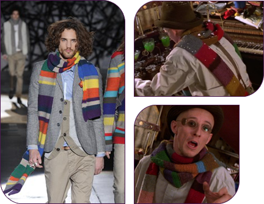
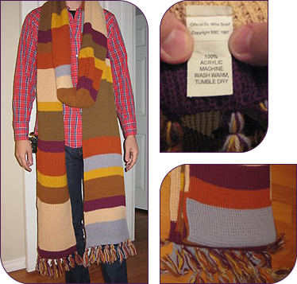
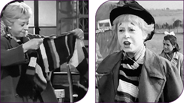

Which scarves are these?

The scarf on the left appeared on the catwalk in Milan as part of Iceberg's Winter 2010 collection. It’s not exact, of course, but the rhythm to the colorway is there - and in garter stitch to boot!
There's also the suspicious scarf warn by Matthew Whittet as avant-garde pianist Erik Satie in the 2001 film Moulin Rouge. It’s a dead ringer for our favorite scarf but with a dozen colors.
Interestingly, in the 1980s, a modified version of Toulouse-Lautrec’s “Ambassadeurs, Aristide Bruant dans son cabaret” was sold as a poster print. The main modification was the addition of colors to the scarf and changing the type to Docteur Qui Tom Baker dans san Tardis.
A licensed scarf from 1987?

There's at least one other scarf besides the Today Promotions one that might have been authorized by the BBC. I write "might have been" despite the copyright info on the tag as this could have been added by the vendor to make it seem official. Garments are not subject to copyright or trademark anyway. I spotted this one on eBay.
It appears to be a flattened knitted tube that was probably created on a machine used for making varsity scarves. Apart from the pastel grey and vertical ribbing, the colors and pattern aren't bad.
La Strada
Whether inspiration or coincidence, Giuletta Masina's Chaplin-esque character Gelsomina wears a seemingly familiar striped garter scarf throughout Fellini's Oscar-winning film. It's not half as long, but it befits a vagabond with its haphazard stripes. I've never been able to find a color photograph (the film is black and white).
